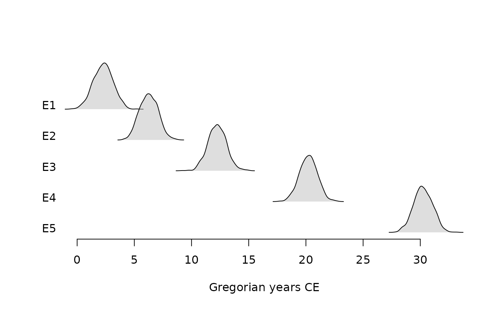
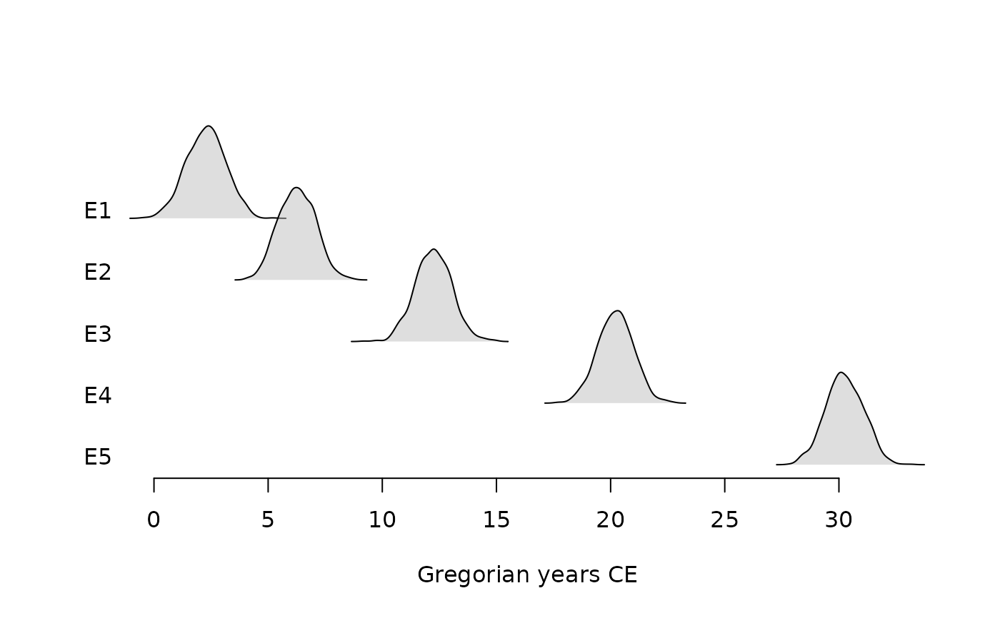

Computes the age-depth curve from the output of the MCMC algorithm and the known depth of each dated samples.
bury(object, depth, ...)
# S4 method for EventsMCMC,numeric
bury(object, depth)
# S4 method for AgeDepthModel
predict(object, newdata)
# S4 method for AgeDepthModel,missing
plot(
x,
level = 0.95,
calendar = getOption("ArchaeoPhases.calendar"),
main = NULL,
sub = NULL,
ann = graphics::par("ann"),
axes = TRUE,
frame.plot = axes,
panel.first = NULL,
panel.last = NULL,
...
)Arguments
- object
An
EventsMCMCobject.- depth
A
numericvector giving of the depths of the dated samples.- ...
Other graphical parameters may also be passed as arguments to this function, particularly,
border,col,lwd,ltyorpch.- newdata
A
numericvector giving the depths at which ages will be predicted. Ifmissing, the original data points are used.- x
An
AgeDepthModelobject.- level
A length-one
numericvector giving the confidence level.- calendar
A
TimeScaleobject specifying the target calendar (seecalendar()).- main
A
characterstring giving a main title for the plot.- sub
A
characterstring giving a subtitle for the plot.- ann
A
logicalscalar: should the default annotation (title and x and y axis labels) appear on the plot?- axes
A
logicalscalar: should axes be drawn on the plot?- frame.plot
A
logicalscalar: should a box be drawn around the plot?- panel.first
An an
expressionto be evaluated after the plot axes are set up but before any plotting takes place. This can be useful for drawing background grids.- panel.last
An
expressionto be evaluated after plotting has taken place but before the axes, title and box are added.
Value
bury()returns anAgeDepthModelobject.predict()returns anEventsMCMCobject.plot()is called it for its side-effects: it results in a graphic being displayed (invisibly returnsx).
Details
We assume it exists a function \(f\) relating the age and the depth \(age = f(depth)\). We estimate the function using local regression (also called local polynomial regression): \(f = loess(age ~ depth)\). This estimated function \(f\) depends on the unknown dates. However, from the posterior distribution of the age/date sequence, we can evaluate the posterior distribution of the age function for each desired depth.
References
Jha, D. K., Sanyal, P. & Philippe, A. (2020). Multi-Proxy Evidence of Late Quaternary Climate and Vegetational History of North-Central India: Implication for the Paleolithic to Neolithic Phases. Quaternary Science Reviews, 229: 106121. doi:10.1016/j.quascirev.2019.106121 .
Ghosh, S., Sanyal, P., Roy, S., Bhushan, R., Sati, S. P., Philippe, A. & Juyal, N. (2020). Early Holocene Indian Summer Monsoon and Its Impact on Vegetation in the Central Himalaya: Insight from dD and d13C Values of Leaf Wax Lipid. The Holocene, 30(7): 1063-1074. doi:10.1177/0959683620908639 .
See also
Other age-depth modeling tools:
interpolate()
Examples
## Coerce to MCMC
eve <- matrix(rnorm(6000, (1:6)^2), ncol = 6, byrow = TRUE)
eve <- as_events(eve, calendar = CE())
## Compute an age-depth curve
age <- bury(eve, depth = 1:6)
plot(age)
## Predict new values
new <- predict(age, newdata = 1.5:5.5)
summary(new)
#> mad mean sd min q1 median q3 max start end
#> 1 2 3 2 0 2 3 3 5 1 4
#> 2 7 7 2 4 6 7 7 9 6 8
#> 3 13 13 2 11 12 13 13 15 12 14
#> 4 21 21 2 19 20 21 21 23 20 22
#> 5 31 31 2 28 30 31 31 33 29 32
plot(eve)
 plot(new)

plot(new)
